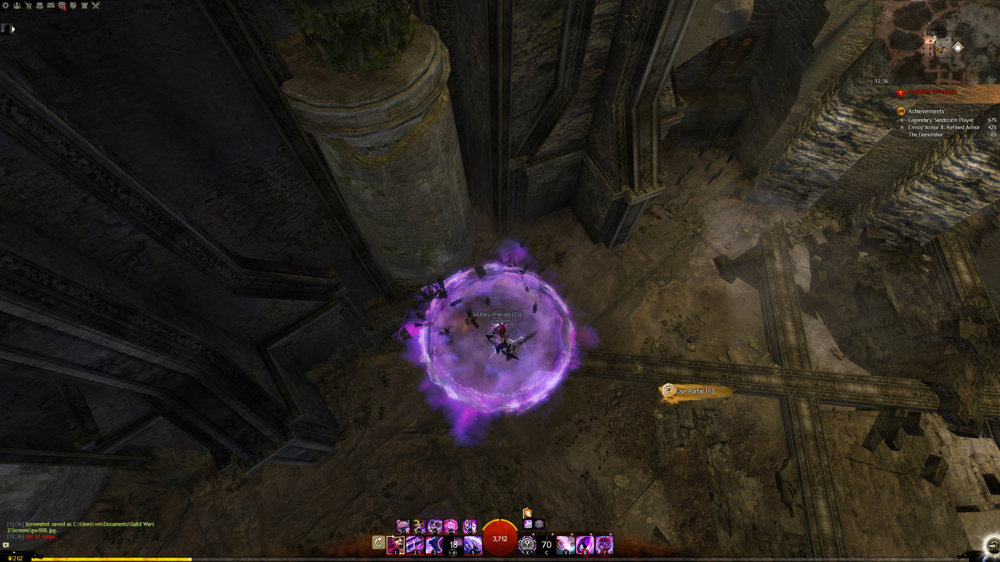

Everyone rushs to the spider as fast as possible.
One dungeoneer, preferable the chrono drops a portal (Pic.1) here to get back quickly and activate the path selection.

Path 1 (Hodgins)
Everyone rushs to the spider as fast as possible.
One dungeoneer, preferable the chrono drops a portal (Pic.1) here to get back quickly and activate the path selection.
Focus the small level 1 spiders. As soon as all small spiders are killed, the boss spider will appear on a fixed spot.
Coordinate yourself with your chrono and/or other guardians for reflections! One feedback or wall is enough.
Don't forget to open your portal to select the path.
In optimal runs this mobgroup is most likely skipped. Killing them won't cost a lot of time, so unless you are going full tryhard, just kill them.
Decide if you want to reduce risk of someone dying by letting the chrono portal the party
through the trap part or stealth up.
After you passed the trap part:
1. Portal: chrono takes the left way and wait in front of the door. Keep a blink and portal ready.
2. Portal: A second chrono/whitemantleportal may be opend on the staircase to kohler by one of the four
dps running to the burrow part.
Double portal greatly increases the movement speed across the dungeon, due to not having a waypoint at kohler.
In case you are skipping the mobs at the trap part, make sure to use mimic before opening portal, because you will need the portal soon again.
When you arrive, you are only three people, since the fourth is dropping a portal. Send two dps to the left part and let the dragonhunter stay on right part.
Drop a portal on the bridge. As soon as the door opens, rush forward and blink up (see the next section)
After you are finished with the burrows, get OOC as fast as possible (remove condis etc), let someone portal to the new waypoint and trigger the next event at the tombstone.
Open the first portal to kohlers staircase. Run to your chrono.
He will open the portal on the bridge when you are there.
Drop a portal on the bridge. As soon as the door opens, rush forward and blink up.

Two high mobility classes should collect the five scepter pieces. Thief and chrono with double blink for example.
Right after the door opens, blink as far as you can to avoid spawning the first mobgroup. In case you spawned them, let the
other 3 guys kill them as quickly as possible. If you dont kill them, the npc might aggro them and cost you a shitton of time.
After the event is finished, Hodgins will run a few meters. You can speed him up with swiftness/superspeed.
The other chrono (not doing scepters) should ready himself up to skip the next part. Stand right here, so you can skip ahead as fast as possible!
This is litterly a chrono only thing. Everyone waits in the room before the scepter event for the portal.
Skip through the maze. Be careful with the gargoyles, since they will oneshot you and kill the entire run for your team. You want to spam harpies, torch and double blink.
Teleport back to the waypoint and open the portal for your team
The endboss is a nonbrainer. Moa it and it should be dead in a few seconds.